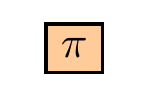

dagtex.RdCreate a new DAG
dagtex( node_options = NULL, edge_options = NULL, swig_options = NULL, adorn_math = getOption("dagtex.adorn_math"), help_lines = getOption("dagtex.help_lines"), help_angles = getOption("dagtex.help_angles"), node_distance = "1cm", ... )
| node_options, edge_options, swig_options | List of options that apply to each node, edge, or split (SWIG) node (can be overwritten for individual elements). See details. |
|---|---|
| adorn_math | Logical. If all node names should be printed in math mode,
you can avoid surrounding them all with |
| help_lines | Logical, or numeric vector of length 2 giving the (x,y)
coordinates that will be used (along with (0,0)) to help troubleshoot node
placement. If |
| help_angles | Logical, or numeric vector of angles in degrees. If |
| node_distance | Character (number with unit, to be read by Tikz). Distance between nodes. Defaults to "1cm". |
Object of class "dagtex".
For non-SWIG nodes, shape options are "rectangle", "circle", "ellipse",
"circle split", "forbidden sign", "diamond", "cross out", "strike out",
"regular polygon", "star". For SWIG nodes, the only option is "ellipse"
(although "circle" and "circle split" return the same result). If no shape is
supplied, the nodes default to being bare, and SWIG nodes are split with a
simple line. Other options regarding shapes can be passed to node_options.
SWIG nodes take the following possible options: split, shape, gap,
fill_color_{x}, line_color_{x}, line_width_{x}, inner_line_width_{x},
where {x} is left, right, upper, or lower. The split option allows
for choosing "v" (vertical) or "h" (horizontal) node splits. Only left/right
options should be specified for vertical splits, and only upper/lower for
horizontal splits; TikZ errors will otherwise result.
Line type ("solid", "dashed", etc.) is denoted with line_type = . Arrowhead
type ("stealth", "latex", etc.) is denoted with arrowhead = . Arrowhead types
can be viewed here: https://gist.github.com/AndiH/f99d9b0cbd3519c27af5b96cfbeff97c.
Color options include color = for edges and nodes and text = for text
color. Note that including color as a node option will also turn the SWIG
nodes that color, unless the individual line_colors are changed. Color values
can be any of: "red", "green", "blue", "cyan", "magenta", "yellow", "black",
"gray", "darkgray", "lightgray", "brown", "lime", "olive", "orange", "pink",
"purple", "teal", "violet", "white". They can be lighted or combined as with
TIkz, e.g., "red!40" or "red!30!blue!30".
Other options should be named as in Tikz code. Underscores (_) can be used
to replace any spaces in the option names. A resource for these options is
here: (https://en.wikibooks.org/wiki/LaTeX/PGF/TikZ).
To apply a style to just the left or right side of a SWIG node, name the
option with the suffix _left, _right, _upper, or _lower, and it will
be treated like a regular TikZ style option.
dagtex( node_options = list(shape = "star"), swig_options = list( gap = "3pt", line_color_right = "red", fill_color_left = "pink", line_width_left = 2.75 ), edge_options = list(line_type = "dashed", color = "green") ) %>% add_node("THIS IS A SWIG", options = list( shape = "forbidden sign", color = "blue", line_width = 5 ) ) %>% add_swig_node(left = "$X$", right = "$x = 1$") %>% add_node("$Y^{x = 1}$", options = list(color = "violet", text = "olive") ) %>% add_edge("$x = 1$", "$Y^{x = 1}$", curve = "up", is_double_arrow = TRUE, options = list(color = "teal", line_type = "solid") ) %>% add_edge(1, 3, curve_in_degree = 0, curve_out_degree = 40 ) %>% add_node("hello", above = 2, options = list(fill = "yellow") )dagtex(node_options = list(shape = "star", star_point_ratio = 0.8, star_points = 7)) %>% add_node("Star")# options() can be used to set options for a session old_opts <- options() options( dagtex.node_options = list(fill = "orange!40"), dagtex.adorn_math = TRUE, # The special option "dagtex.shape" sets shape for regular and swig nodes dagtex.shape = "rectangle" ) dagtex() %>% add_node("\\pi")